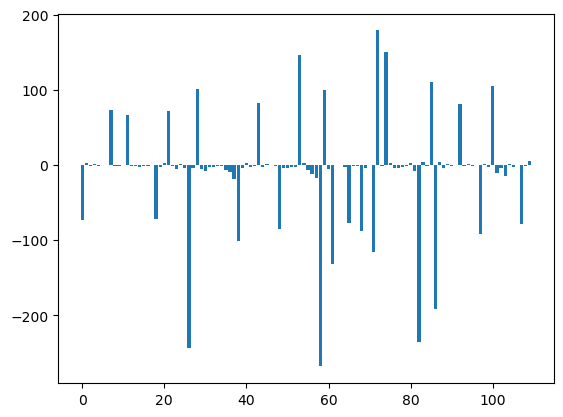
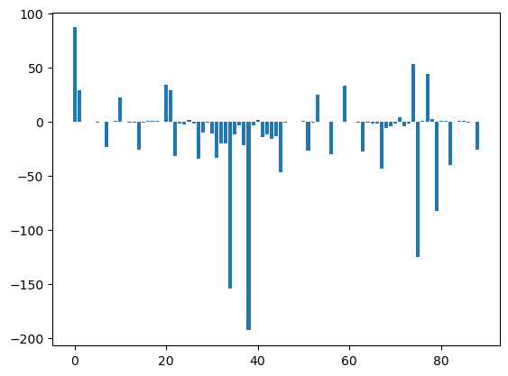

Get non bonded potential energy#
import molsysmt as msm
msm.config.set_default_standard_units(standards=['nm', 'ps', 'K', 'mole', 'amu', 'e',
'kcal/mol', 'kcal/(mol*nm**2)', 'N', 'degrees'])
molecular_system = msm.convert(msm.systems['Barnase-Barstar']['barnase_barstar.h5msm'])
msm.info(molecular_system, element='molecule')
| index | name | type | n atoms | n groups | n components | chain index | entity index | entity name |
|---|---|---|---|---|---|---|---|---|
| 0 | BARNASE | protein | 1727 | 110 | 1 | 0 | 0 | BARNASE |
| 1 | BARSTAR | protein | 1432 | 89 | 1 | 0 | 1 | BARSTAR |
U1nb2 = msm.molecular_mechanics.get_non_bonded_potential_energy(molecular_system,
selection='molecule_name=="BARNASE"',
selection_2='molecule_name=="BARSTAR"')
---------------------------------------------------------------------------
OpenMMException Traceback (most recent call last)
/tmp/ipykernel_6553/647017438.py in ?()
----> 1 U1nb2 = msm.molecular_mechanics.get_non_bonded_potential_energy(molecular_system,
2 selection='molecule_name=="BARNASE"',
3 selection_2='molecule_name=="BARSTAR"')
~/micromamba/envs/docs/lib/python3.12/site-packages/molsysmt/_private/digestion/digest.py in ?(*args, **kwargs)
118
119 if 'self' in all_args:
120 return func(all_args['self'], **final_args)
121 else:
--> 122 return func(**final_args)
~/micromamba/envs/docs/lib/python3.12/site-packages/molsysmt/molecular_mechanics/get_non_bonded_potential_energy.py in ?(molecular_system, selection, selection_2, platform, engine, syntax)
53 for att in possible_missing_attributes:
54 if not has_attribute(molecular_system, att):
55 extra_conversion_arguments[att]=default_attribute[att]
56
---> 57 context = convert(molecular_system, to_form='openmm.Context',
58 **extra_conversion_arguments, platform=platform)
59
60 tmp_system = context.getSystem()
~/micromamba/envs/docs/lib/python3.12/site-packages/molsysmt/_private/digestion/digest.py in ?(*args, **kwargs)
118
119 if 'self' in all_args:
120 return func(all_args['self'], **final_args)
121 else:
--> 122 return func(**final_args)
~/micromamba/envs/docs/lib/python3.12/site-packages/molsysmt/basic/convert.py in ?(molecular_system, to_form, selection, structure_indices, syntax, verbose, skip_digestion, **kwargs)
526 return output
527
528 # If one to one
529 if not isinstance(from_form, (list, tuple)):
--> 530 output = _convert_one_to_one(molecular_system, from_form, to_form=to_form, selection=selection, structure_indices=structure_indices,
531 syntax=syntax, verbose=verbose, skip_digestion=True, **kwargs)
532
533 # If multiple to one
~/micromamba/envs/docs/lib/python3.12/site-packages/molsysmt/basic/convert.py in ?(molecular_system, from_form, to_form, selection, structure_indices, syntax, verbose, **kwargs)
83
84 if len(missing_arguments)>0:
85 raise NotCompatibleConversionError(from_form, to_form, missing_arguments)
86
---> 87 output = function(molecular_system, **conversion_arguments, **kwargs)
88
89 elif ('molsysmt.MolSys' in _dict_modules[from_form]._convert_to) and (to_form in _dict_modules['molsysmt.MolSys']._convert_to):
90
~/micromamba/envs/docs/lib/python3.12/site-packages/molsysmt/_private/digestion/digest.py in ?(*args, **kwargs)
48 @functools.wraps(func)
49 def wrapper(*args, **kwargs):
50
51 if kwargs.get('skip_digestion', False):
---> 52 return func(*args, **kwargs)
53
54 # Define caller
55
~/micromamba/envs/docs/lib/python3.12/site-packages/molsysmt/form/molsysmt_MolSys/to_openmm_Context.py in ?(item, atom_indices, structure_indices, forcefield, water_model, implicit_solvent, non_bonded_method, constraints, switch_distance, dispersion_correction, ewald_error_tolerance, integrator, temperature, friction, time_step, platform, skip_digestion)
14
15 tmp_item = to_openmm_Topology(item, atom_indices=atom_indices, structure_indices=structure_indices, skip_digestion=True)
16 coordinates = get_coordinates_from_atom(item, indices=atom_indices, structure_indices=structure_indices, skip_digestion=True)
17
---> 18 tmp_item = openmm_Topology_to_openmm_Context(tmp_item, coordinates=coordinates,
19 forcefield=forcefield, water_model=water_model, implicit_solvent=implicit_solvent,
20 non_bonded_method=non_bonded_method, constraints=constraints, switch_distance=switch_distance,
21 dispersion_correction=dispersion_correction, ewald_error_tolerance=ewald_error_tolerance,
~/micromamba/envs/docs/lib/python3.12/site-packages/molsysmt/_private/digestion/digest.py in ?(*args, **kwargs)
48 @functools.wraps(func)
49 def wrapper(*args, **kwargs):
50
51 if kwargs.get('skip_digestion', False):
---> 52 return func(*args, **kwargs)
53
54 # Define caller
55
~/micromamba/envs/docs/lib/python3.12/site-packages/molsysmt/form/openmm_Topology/to_openmm_Context.py in ?(item, atom_indices, coordinates, forcefield, water_model, implicit_solvent, non_bonded_method, constraints, switch_distance, dispersion_correction, ewald_error_tolerance, integrator, temperature, friction, time_step, platform, skip_digestion)
14 water_model=water_model, implicit_solvent=implicit_solvent,
15 non_bonded_method=non_bonded_method, constraints=constraints,
16 switch_distance=switch_distance, dispersion_correction=dispersion_correction,
17 ewald_error_tolerance=ewald_error_tolerance, skip_digestion=True)
---> 18 context = openmm_System_to_openmm_Context(system, coordinates=coordinates,
19 integrator=integrator, temperature=temperature, friction=friction,
20 time_step=time_step, platform=platform, skip_digestion=True)
21
~/micromamba/envs/docs/lib/python3.12/site-packages/molsysmt/_private/digestion/digest.py in ?(*args, **kwargs)
48 @functools.wraps(func)
49 def wrapper(*args, **kwargs):
50
51 if kwargs.get('skip_digestion', False):
---> 52 return func(*args, **kwargs)
53
54 # Define caller
55
~/micromamba/envs/docs/lib/python3.12/site-packages/molsysmt/form/openmm_System/to_openmm_Context.py in ?(item, atom_indices, coordinates, integrator, temperature, friction, time_step, platform, skip_digestion)
16 if integrator=='Langevin':
17 integrator = mm.LangevinIntegrator(temperature, friction, time_step)
18
19 if platform=='CUDA':
---> 20 platform = mm.Platform.getPlatformByName('CUDA')
21 elif platform=='CPU':
22 platform = mm.Platform.getPlatformByName('CPU')
23
~/micromamba/envs/docs/lib/python3.12/site-packages/openmm/openmm.py in ?(name)
12493 Get the registered Platform with a particular name. If no Platform with that name has been registered, this throws an exception.
12494
12495 This is identical to the version of getPlatform() that takes a name. It is here for backward compatibility.
12496 """
> 12497 return _openmm.Platform_getPlatformByName(name)
OpenMMException: There is no registered Platform called "CUDA"
U1nb2
-761.0340701918301 kilocalorie/mole
U12 = msm.molecular_mechanics.get_potential_energy(molecular_system)
U1 = msm.molecular_mechanics.get_potential_energy(molecular_system, selection='molecule_name=="BARNASE"')
U2 = msm.molecular_mechanics.get_potential_energy(molecular_system, selection='molecule_name=="BARSTAR"')
U12-U1-U2
-761.0342343040447 kilocalorie/mole
U12_groups = msm.molecular_mechanics.get_non_bonded_potential_energy(molecular_system,
selection='all in groups of molecule_name=="BARNASE"',
selection_2='all in groups of molecule_name=="BARSTAR"')
U12_groups
| Magnitude | [[21.872896081402924 8.17112439449157 0.024471752502266353 ... |
|---|---|
| Units | kilocalorie/mole |
import matplotlib.pyplot as plt
plt.imshow(U12_groups, origin='lower', cmap='bwr', vmin=-125, vmax=125)
plt.colorbar()
plt.show()
/home/diego/Myopt/miniconda3/envs/MolSysMT@uibcdf_3.10/lib/python3.10/site-packages/matplotlib/cbook.py:733: UnitStrippedWarning: The unit of the quantity is stripped when downcasting to ndarray.
x = np.array(x, subok=True, copy=copy)
distance = msm.structure.get_distances(molecular_system, selection='all in groups of molecule_name=="BARNASE"',
selection_2='all in groups of molecule_name=="BARSTAR"')
plt.scatter(distance.flatten(), U12_groups.flatten(), s=1.0)
plt.ylim([-125.0, 125.0])
plt.show()
/home/diego/Myopt/miniconda3/envs/MolSysMT@uibcdf_3.10/lib/python3.10/site-packages/numpy/ma/core.py:2820: UnitStrippedWarning: The unit of the quantity is stripped when downcasting to ndarray.
_data = np.array(data, dtype=dtype, copy=copy,
import numpy as np
U12_1_groups= U12_groups.sum(axis=1)
U12_2_groups= U12_groups.sum(axis=0)
plt.bar(np.arange(U12_1_groups.shape[0]), msm.pyunitwizard.get_value(U12_1_groups))
plt.show()
plt.bar(np.arange(U12_2_groups.shape[0]), msm.pyunitwizard.get_value(U12_2_groups))
plt.show()


aux = [ii for ii in msm.pyunitwizard.get_value(U12_1_groups)]
aux += [ii for ii in msm.pyunitwizard.get_value(U12_2_groups)]
aux = np.array(aux)
max_abs_val = max(abs(aux.min()), abs(aux.max()))
view = msm.view(molecular_system)
view.clear()
view.add_cartoon(selection='all')
msm.thirds.nglview.color_by_value(view, aux, min_value= -max_abs_val, max_value= max_abs_val, cmap='bwr')
view